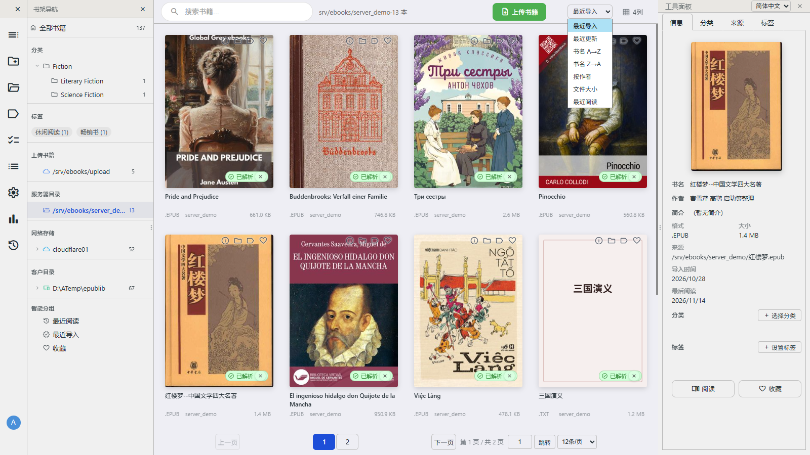

书架与视图
书架可以换显示方式、换排序、按条件筛选，也可以批量处理多本书。

网格与列表
- 网格：显示封面，适合找书。
- 列表：每行一本，能同时看到更多信息，适合整理书库。
左侧工具栏的视图按钮在两种方式之间切换（按钮上显示当前方式）。
排序
顶栏「排序」下拉提供：最近添加、最近更新、书名 A→Z、书名 Z→A、按作者、文件大小、最近阅读。
搜索与分页
- 搜索框输入书名或作者，回车后筛选结果。
- 底部分页条切换页码；每页显示的书数固定。
批量操作
点左侧工具栏的「批量」进入多选，选中若干本后可统一处理（如删除、加入分类或标签）。
其它入口
- 统计：查看自己的阅读数据。
- 历史：最近读过的书。
- 设置：书架相关的选项。
- 左侧目录树的折叠与展开按钮，可收起导航以获得更宽的显示区域。